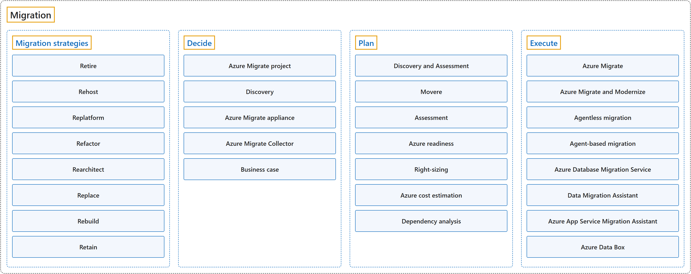

24. Migration
Classification

Process

Glossary
| Term | Definition | 中文翻译 | Source |
|---|---|---|---|
| Migration 迁移 |
"Cloud migration is the process of moving applications and data from one location, often a company's private, on-premises servers, to a public cloud provider's servers, but it can also entail moving resources between different clouds." | 云迁移是把应用程序和数据从一个位置（通常是公司自己的本地服务器）迁到公有云提供商的服务器上的过程，也可以是在不同的云之间迁移资源。 | Microsoft, n.d., "Cloud migration definition" section, para. 1 |
| Migration strategies 迁移策略 |
"There are multiple migration strategies, sometimes known as the "Rs" of cloud migration." | 迁移有多种策略，有时被称为云迁移的"R"。 | Microsoft, 2025, para. 1 |
| Migration phases 迁移阶段 |
"A general migration journey includes the following phases. Azure Migrate provides support at each phase." | 一般的迁移之旅包括以下几个阶段。Azure Migrate 在每个阶段都提供支持。 | Microsoft, 2026b, "Migration phases" section, para. 2 |
| Decide 决策 |
"The first step in a migration journey is to identify your workloads." | 迁移之旅的第一步是识别你的工作负载。 | Microsoft, 2026b, "Decide" section, para. 1 |
| Plan 规划 |
"After you make the decision to migrate to Azure, the next important phase of migration is planning." | 在你决定迁移到 Azure 之后，迁移的下一个重要阶段是规划。 | Microsoft, 2026b, "Plan" section, para. 1 |
| Execute 执行 |
"In the execution phase, you perform the migration or modernization of your workloads to move to Azure." | 在执行阶段，你对工作负载进行迁移或现代化，把它们迁到 Azure。 | Microsoft, 2026b, "Execute" section, para. 1 |
| Replication 复制 |
"After setting up the appliance and completing discovery, you can begin replication of VMware VMs to Azure." | 设置好设备并完成发现后，就可以开始把 VMware 虚拟机复制到 Azure。 | Microsoft, 2026c, "Execute migrations" section, para. 1 |
| Test migration 测试迁移 |
"Test migration simulates the migration by creating an Azure VM using replicated data (usually migrating to a non-production VNet in your Azure subscription)." | 测试迁移用复制过来的数据创建一台 Azure 虚拟机，模拟迁移（通常迁到 Azure 订阅里一个非生产的虚拟网络）。 | Microsoft, 2026c, "Run a test migration" section, bullet 2 |
| Migrate VMs 迁移虚拟机 |
"After you've verified that the test migration works as expected, you can migrate the source (on-premises or AVS) machines." | 确认测试迁移符合预期后，就可以迁移源（本地或 AVS）计算机。 | Microsoft, 2026c, "Migrate VMs" section, para. 1 |
| Complete migration 完成迁移 |
"This stops replication for the source (on-premises or AVS) machine, and cleans up replication state information for the VM." | 这一步停止源（本地或 AVS）计算机的复制，并清理该虚拟机的复制状态信息。 | Microsoft, 2026c, "Complete the migration" section, step 1 |
Coverage
| Certification | Skill area |
|---|---|
| AZ-900 Microsoft Azure Fundamentals | Describe Azure architecture and services (35–40%) |
| AZ-305 Designing Microsoft Azure Infrastructure Solutions | Design infrastructure solutions (30–35%) |
References
- Microsoft. (n.d.). What is cloud migration? Microsoft Azure. Retrieved October 24, 2026, from https://azure.microsoft.com/en-us/resources/cloud-computing-dictionary/what-is-cloud-migration
- Microsoft. (2025). Select your cloud migration strategies. Cloud Adoption Framework. https://learn.microsoft.com/en-us/azure/cloud-adoption-framework/plan/select-cloud-migration-strategy
- Microsoft. (2026a). Study guide for Exam AZ-305: Designing Microsoft Azure infrastructure solutions. Microsoft Learn. https://learn.microsoft.com/en-us/credentials/certifications/resources/study-guides/az-305
- Microsoft. (2026b). About Azure Migrate. Microsoft Learn. https://learn.microsoft.com/en-us/azure/migrate/migrate-services-overview
- Microsoft. (2026c). Migrate VMware VMs to Azure (agentless). Microsoft Learn. https://learn.microsoft.com/en-us/azure/migrate/tutorial-migrate-vmware